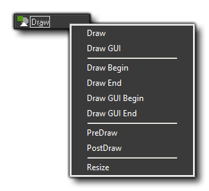
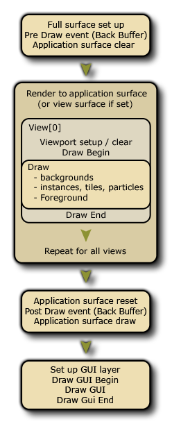

The Draw Event
The Draw Events are some of the many events that
can be triggered in an instance and may contain code or
actions.
 Draw
Event
Draw
Event
This event is the one that governs what you see on the screen when
you run your game, and is split into various separate
"sub-events":

As you can see, the draw event category has multiple different
event types, and here we will deal with the standard Draw Events:
draw Begin, Draw and Draw End. You can get information on the other
event types from the following pages:
- Draw GUI Event
- Pre And Post
Draw Event
- Resize Event
The standard draw events are the ones covered on this page and
they run before the Draw GUI events and between the
Pre Draw and Post Draw events, meaning that
everything that is drawn in this event is drawn beneath that of the
Draw GUI event, regardless of depth (ie: anything drawn in the Draw
GUI event will always be drawn over anything drawn in the
normal draw event, regardless of depth). The image below
illustrates the order in which each event is performed: 
The Standard Draw Event
The normal Draw Events fall into three types: The Draw
begin, the standard Draw and the Draw End events.
In general, you will only need to use the standard Draw
event and you should be aware that all instances in a room
will have this standard draw event triggered each step of the game.
So, this event will always be called as long as the instance
has the visible flag set to true. Even if you have defined
nothing for this event in the object properties (ie: no code
nor actions), if the object has a sprite assigned it will still
have a draw event which will be triggered! You see, GameMaker:
Studio has two ways to draw things in the standard Draw
event:
- the default draw, which is when you define the sprite in
the object properties and place no actions or code in the normal
draw event, in which case GameMaker: Studio will draw that
sprite, but note that any transforms you perform in other events to
change the image scale, index, blending etc... will be reflected
too as long as the draw event is empty.
- the custom draw, which is when you place code or actions
in the draw event. This is telling GameMaker: Studio "I want
to control what you draw for instances of this object" and it
completely over-rides the default draw. This means that you can
have an object with a sprite assigned, then set the draw event to
draw text and the sprite will not be drawn as you have not
told GameMaker: Studio to draw it.
Draw Begin and Draw End Events
Apart from the main draw Event, you also have a Draw
Begin and a Draw End event. These act exactly the same
as a standard Draw event (ie: they will draw whatever you put in
them every step of the game and for all views), but they do not
"default draw" anything if not added to an instance, and they will
always run before/after the standard Draw event. So, you would have
the Draw Begin step for all instances, then the Draw
Event for all instances, then finally the Draw End step for
all instances.
In this way, you can draw things or set draw properties in the Draw
Begin step in one instance and be sure that all instances with a
standard Draw event or Draw End event will use these properties or
draw over what the first instance has drawn. Basically its a sure
fire way to guarantee that certain things are drawn at certain
times, much like the Begin Step and End Step events do.
Things to Note
There are a few things to note when drawing things in
GameMaker: Studio, whether it's a sprite you are drawing or
a shader, or 3D:
- The draw event is a very intensive event, in that it's one of
the events that takes up most time and resources... to that end it
is never a good idea to do anything in the draw event other
than drawing. So save your large code or complex actions for the
Step event or Alarms or whatever other event fits, but leave the
draw event clear for the drawing as that's what it does best.
- If your object has had the visible parameter set to off
(so that the instances of the object are not drawn) then all
draw events are skipped (except for the Resize event. This
means that making an instance invisible will stop all code placed
in any of these events not to run, so don't put essential code in
the draw events if they are not going to be visible.
- What you draw has nothing to do with the collision engine you
choose (traditional or physics) as that is defined by the object
properties and the sprite or mask that the object has been
given.
© Copyright YoYo Games Ltd. 2018 All Rights Reserved